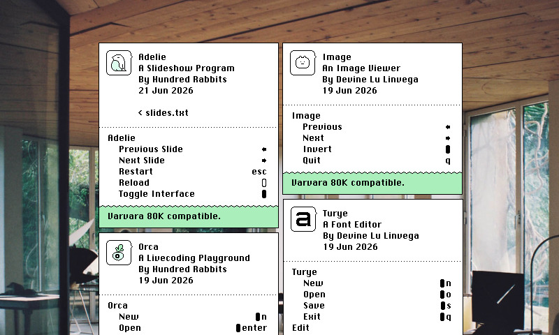
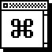

Manifest exposes a rom's features.
A manifest is a simple data structure that allows Uxntal applications to specify what feature can be reached by shortcuts. The manifest.tal is a support library created to this end. You can see support coverage here.
@manifest/dat
_{ =dict/flick
00 "1 =tool/color1 $2
00 "2 =tool/color2 $2
00 "3 =tool/color3 $2
00 "4 =tool/color4 $2
00 "q =tool/type1 $2
00 "w =tool/type2 $2
00 "[ =tool/decr-size $2
00 "] =tool/incr-size $2 }
_{ =dict/scene
40 00 =scene/select-prev $2
80 00 =scene/select-next $2
00 1b =scene/reset $2
00 08 =canvas/wipe $2 }
_{ =dict/snarf
01 "c =snarf/copy $2
01 "v =snarf/paste $2
05 "V =snarf/paste-1bit $2
01 "x =snarf/cut $2 }
( ) $1
To match controller input to the functions in the table:
@manifest/scan ( but key -- fn* )
ORAk ?{ POP2 #ffff JMP2r }
,&bk STR2
;&dat
&>cat
DUP2 LDAk #00 SWP INC ADD2 SWP2 #0003 ADD2
&>opt
LDA2k [ LIT2 &bk $2 ] NEQ2 ?{
NIP2 INC2 INC2 LDA2 JMP2r }
#0006 ADD2 GTH2k ?/>opt
POP2 INC2 LDAk ?/>cat
POP2 #ffff JMP2r
